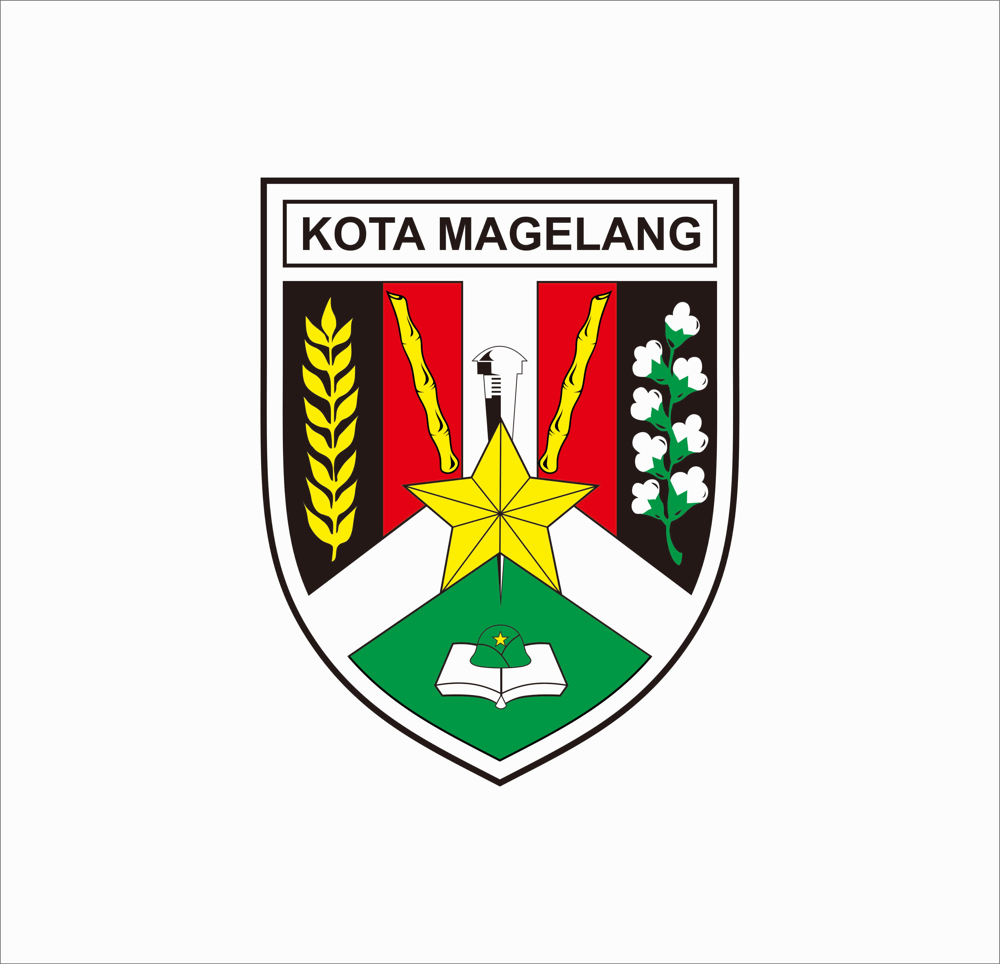

Kota Magelang (bahasa Jawa: Hanacaraka : ꦩꦒꦼꦭꦁ, Pegon: ماڬلاڠ, translit. Magêlang) adalah salah satu kota yang terletak di provinsi Jawa Tengah, Indonesia. Kota Magelang merupakan enklave dari Kabupaten Magelang, yang terletak pada jalan raya antara Kota Semarang–Kota Yogyakarta. Pada pertengahan tahun 2024, jumlah penduduk kota Magelang sebanyak 128.591 jiwa, dengan kepadatan penduduk 8.000 jiwa/km2
Sejarah
Magelang adalah sebuah kabupaten yang terletak di Jawa Tengah, Indonesia. Berikut adalah ringkasan sejarah singkat Magelang:
Pra-Sejarah dan Kerajaan Hindu-Buddha:
Wilayah Magelang telah ditempati sejak zaman pra-sejarah. Pada masa kerajaan Hindu-Buddha, wilayah ini merupakan bagian dari wilayah kerajaan Mataram Kuno.
Kerajaan Islam:
Pada abad ke-13, wilayah Magelang menjadi bagian dari Kerajaan Demak, salah satu kerajaan Islam pertama di Jawa. Kerajaan ini berperan penting dalam penyebaran Islam di Jawa.
Kolonial Belanda:
Pada masa kolonial Belanda, Magelang menjadi bagian dari Hindia Belanda. Pada awal abad ke-20, wilayah ini mengalami banyak perubahan politik dan sosial akibat kebijakan kolonial.
Kemerdekaan dan Pembentukan Desa:
Setelah kemerdekaan Indonesia pada tahun 1945, Magelang menjadi bagian dari Kabupaten Semarang. Pada tahun 1950, Magelang resmi menjadi kabupaten tersendiri dengan pembentukan desa-desa baru.
Pertumbuhan dan Perkembangan:
Sejak pembentukan, Magelang terus berkembang dengan peningkatan infrastruktur, pendidikan, dan ekonomi. Wilayah ini dikenal dengan keindahan alamnya, terutama Candi Borobudur yang terletak di sekitarnya.
Geografis
Geografis Kota Magelang mengacu pada posisi, karakteristik fisik, dan kondisi lingkungan yang mempengaruhi kehidupan di kota tersebut. Berikut adalah penjelasan lebih rinci mengenai geografis Kota Magelang:
Posisi Geografis:
Lokasi: Kota Magelang terletak di bagian tengah Pulau Jawa, Indonesia. Secara administratif, kota ini berada di Kabupaten Magelang, Jawa Tengah.
Koordinat: Kota Magelang memiliki koordinat sekitar 7° LS dan 110° BT.
Topografi:
Kondisi Tanah: Wilayah sekitar Kota Magelang umumnya datar dengan ketinggian rata-rata sekitar 5-10 meter di atas permukaan laut. Namun, di sekitarnya terdapat juga pegunungan dan perbukitan seperti Pegunungan Sumbing dan Pegunungan Sindoro.
Sungai: Sungai Lawe melewati kota ini, memberikan sumber air yang penting untuk kebutuhan sehari-hari, irigasi, dan transportasi.
Iklim:
Zona Iklim: Kota Magelang berada di zona iklim tropis, yang ditandai dengan dua musim utama: musim hujan dan musim kemarau.
Suhu: Suhu rata-rata di kota ini berkisar antara 25-30°C sepanjang tahun.
Aksesibilitas:
Jalan Raya: Kota Magelang terhubung dengan jalan raya nasional yang menghubungkan dengan kota-kota besar lainnya di Jawa Tengah, seperti Semarang dan Solo.
Transportasi: Bandara Internasional Adi Sumarmo di Solo juga berfungsi sebagai akses utama ke kota ini, menyediakan penerbangan domestik dan internasional.
Wilayah Sekitar:
Destinasi Wisata: Di sekitar Kota Magelang terdapat berbagai destinasi wisata terkenal, seperti Candi Borobudur dan Candi Prambanan, yang merupakan Situs Warisan Dunia UNESCO.
Pertanian dan Perkebunan: Wilayah ini dikenal dengan kebun teh dan pertanian padi yang subur, yang menjadi sumber pendapatan utama bagi penduduk setempat.
Kondisi Lingkungan:
Keindahan Alam: Kota Magelang dikelilingi oleh hutan hijau dan sawah-sawah yang menambah keindahan alam kota ini.
Keanekaragaman Hayati: Wilayah ini memiliki keanekaragaman hayati yang kaya, termasuk berbagai spesies flora dan fauna.
Lambang

Arti Lambang:
Padi dan Kapas : kemakmuran, cukup sandang dan pangan
Bambu Runcing : terletak di atas dasar merah tua yang berarti keberanian dan kekuatan Rakyat berdasarkan sejarah perjuangan Rakyat dalam mengusir Belanda, Inggris dan Gurkha dalam revolusi fisik yang diwarisinya dari perjuangan Pangeran Diponegoro
Padi : berjumlah 17 Butir berarti tanggal 17
Kapas : berjumlah 8 pucuk yang berarti bulan ke-8 (Agustus)
Dua Buah Bambu Runcing : yang pertama berusa empat, dan yang ke-dua beruas lima melambangkan tahun 1945
Paku di Atas Simpang Tiga : paku melambangkan Gunung Tidar, pakuning Pulau Jawa. Simpang tiga menggambarkan letaknya dipertemukan dari tiga jurusan yaitu Semarang, Purworejo, dan Yogyakarta.
Bintang Besar : Bintang besar terletak di tengah-tengah melambangkan Rakyat Magelang ber-Pancasila atau Rakyat Magelang ber-Ketuhanan Yang Maha Esa.
Topi Baja di Atas Buku : Adanya pendidikan ABRI, Kota Militer dan merupakan pusat pendidikan umum.
Arti Warna :
Hijau : Lambang kesuburan dan kemakmuran
Merah Tua : lambang keberanian/revolusioner
Putih : Lambang Kesucian/kejujuran/kebersihan
Kuning Emas : Lambang keagungan/kebahagiaan
Hitam : Lambang keadilan, kuat/sentausa (langgeng)
Pendidikan
Kota Magelang merupakan daerah dengan pendidikan yang paling maju di Karesidenan Kedu, bahkan di Jawa Tengah, pun dapat bersaing dengan kota-kota maju lainnya seperti Semarang dan Surakarta. Kota Magelang selalu menduduki peringkat 3 besar di Jawa Tengah dan bahkan dalam skala nasional berhasil mengalahkan daerah-daerah lain yang cukup favorit.
Terdapat sejumlah institusi pendidikan ternama di Kota Magelang, antara lain SMP Negeri 1 Magelang, SMP Negeri 2 Magelang, SMP Negeri 7 Magelang, SMA Negeri 1 Magelang, SMA Negeri 2 Magelang, SMA Negeri 3 Magelang, SMA Negeri 5 Magelang, SMK Negeri 1 Magelang, dan Akademi Militer (AKMIL) yaitu sekolah calon perwira TNI Angkatan Darat bernama Akademi Angkatan Darat (dahulu AKABRI). AKMIL merupakan tempat seleksi Tiga Angkatan TNI sebelum diterima di AAD (Magelang), AAU (Yogyakarta) dan AAL (Surabaya). Mantan Presiden Susilo Bambang Yudhoyono merupakan alumni kampus ini.
Perguruan tinggi swasta lainnya adalah Universitas Muhammadiyah Magelang (termasuk Akademi Kebidanan Muhammadiyah, Akademi Keperawatan Muhammadiyah, dan Politeknik Muhammadiyah), serta STMIK Bina Patria serta Akademi Tirta Indonesia yang merupakan akademi tirta satu-satunya di Indonesia.
Selain itu juga terdapat perguruan tinggi negeri yaitu Universitas Tidar, yang statusnya beralih dari perguruan tinggi swasta menjadi perguruan tinggi negeri dideklarasikan pada tanggal 1 April 2014 melalui Peraturan Presiden Nomor 23 Tahun 2014.
Transportasi
Kota Magelang merupakan jalur tengah Semarang–Yogyakarta , Magelang–Purwokerto Dan Magelang–Purworejo.
Angkutan Antar Kota
Kota magelang terdapat Terminal Tidar di Kota ini Tipe A (milik Pemerintah Pusat melalui Kementerian Perhubungan )
Terminal Kebonpolo Tipe C ( Milik Pemerintah Kota melalui Dinas Perhubungan )
Angkutan Kereta Api
Dulu juga pernah yang lewati kereta api yang nonaktif milik NIS Yaitu :
Stasiun Magelang
Stasiun Magelang Kota
Stasiun Tidar
Pariwisata
Meskipun tergolong kecil, kota Magelang memiliki banyak tempat menarik yang layak dikunjungi, antara lain:
Wisata kuliner
Di Kota Magelang terdapat beberapa tempat jajan yang mempunyai kekhasan tersendiri, baik dari cita rasa makanan yang dihidangkan, maupun nilai historis yang dikandung di tempat tersebut. Menelusuri tempat jajan di Kota Magelang, ada yang khusus buka di siang hari dan malam hari.
Taman Kyai Langgeng
Taman Kyai Langgenter letak di Kota Magelang, Jawa Tengah, tepatnya di Jalan Cempaka. Merupakan satu-satunya taman wisata di Kota Magelang dengan luas seluruhnya meliputi 28 hektare, letaknya sekitar 1 kilometer dari pusat kota ke arah selatan. Taman wisata ini memiliki ratusan koleksi tanaman langka yang bisa dimanfaatkan sebagai objek penelitian, patung-patung dinosaurus dalam ukuran asli, aneka fasilitas permainan, serta yang terbaru adalah prototipe pesawat terbang. Objek wisata ini terletak sekitar 19 Kilometer dari Candi Borobudur, 35 kilometer dari Kopeng atau 50 Kilometer dari Candi Prambanan dan 42 kilometer dari Monumen Yogya Kembali.
Alun-alun Kota Magelang
Alun-alun Kota dijadikan sebagai pusat Kota Magelang karena letaknya yang sangat strategis di tengah kota. Banyak sekali kendaraan angkutan kota dengan berbagai jalur melewatinya. Dari alun-alun ini orang dapat menjangkau Pecinan atau Jalan Pemuda. Kawasan Pecinan merupakan salah satu kawasan pusat perdagangan di Kota Magelang, yang sudah ada sejak zaman pemerintah Kolonial Belanda.
GOR Samapta
GOR (Gedung Olah Raga) Samapta terletak di wilayah Kecamatan Magelang Utara. Saat ini lingkungan sekitarnya, yang dkenal dengan Kawasan GOR Samapta, mulai ditata dan dibenahi karena pada kawasan ini telah dan masih akan dibangun beberapa sarana olahraga, diantaranya adalah: Stadion dr. H. Moch.Soebroto dengan kapasitas 15.000 penonton, Kolam Renang standar Internasional kapasitas 5.000 penonton, Wisma Atlet, Lapangan Tennis Indoor, serta beberapa sarana olahraga dan rekreasi lainnya.